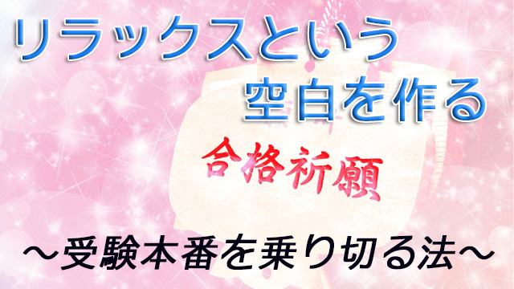

１月に入った。受験シーズンの到来である。来週末には大学受験の先陣を切ってセンター試験が始まる。受験生にとって今まさに緊張のピークに達しているだろう。
ところで受験に限らず本番に強いタイプと弱いタイプがいるものだが、それはどんな違いだろうか。能力なのか、運なのか要領の良し悪しなのか。私も受験指導のプロとしてよく聞かれるが実は一概に答えられるものではない。
明らかに学力差（実力差）がある場合は別として、人の能力はそれほど違いがあるものではない。大体紙一重と言ってよい。問題は自分の持っている力を当日（本番で）最大限発揮できるかどうかである。仮に持てる力の100％を発揮できればまず成功するだろうし、50％しか発揮できなければ厳しい結果になるだろう。明暗を分けるのはその一点にかかっていると言える。
しかし本番で自らの力を最大に発揮するというのは、受験生に限らず難しいことに変わりない。それどころか独特の雰囲気の中で本来の力を十分出せない人のほうが多い。
つまり本番では実力が発揮できないことを前提にした上で、それでもその状況の中での最大値を狙うという現実的方法をとることが大切になる。
具体例を話すと、2年前大学受験をしたＡ君というセンター試験で失敗した子がいた。得意の国語と英語で予想外の失点をしたのである。続くスベリ止めの私大でも思うように得点できず。次の有名私大では会場にいる他の受験生が皆自分より優秀に見えて、何と「視界が揺れる」という目まいのような状態に陥った。もちろん結果はメロメロ！
そしてどうなったか。彼に直接語ってもらおう。
―正直ヤバイと思いました。この悪い流れをどうにかしないとダメだって。そのときフッと思いついて「お笑いの動画」を観始めたのです。笑っているうちに気持ちがふっ切れたというか。その後試験のたびに始発で向かい会場近くのコーヒーショップとかで動画を観て備えました（笑）。
もう、参考書とか問題集はほとんど持ち込まず試験場でも観たりしてました―
これが転換点となった。無駄な力が抜けその後の試験はスムースに運び超難関私大2校に合格。最後の国立大にも受かった。
Ａ君の話にはいくつか大切なポイントがある。最初の試験（センターや私大2校）では力が発揮できず、しかし「お笑い動画」を観るという切り換えのツールを手にすることで自らを修正したことだ。
多くの人が本番で力を発揮できない理由は、力みすぎること。「失敗してはいけない」「何としても得点しなければ」という意気込みが身体や頭脳をこわばらせる。いわゆる「頭が回っていない」という状況だ。
特に受験生が得意科目で点が取れないのは、この意気込みが空回りして、力みがブロックとなり本来の能力が出せないからだ。
Ａ君の場合、お笑い動画を観ることで「点を取れなければ大変だ」という雑念を断ち切ることができた。
雑念でいっぱいの頭脳に空白を作ったのだ。そこから「流れ」が変わった。
Ａ君のスゴいところは何よりも「自分が悪い流れにいる」ことに気づいたことだ。つまり自分を客観視できたところにある。普通はそのことにさえ気づかず「悪い流れ」に引きずられ続ける。
さらに「笑い」は思考（雑念）の連鎖を切断し、一気に緊張を解き放つ効用がある。彼が無意識にお笑いの動画を観たことは正解だった。
もちろん、お笑いを見れば受かるという話ではないから注意が必要だが自分の置かれている状況（精神状態も含めて）を客観的に知り、リラックスするツールを自分なりに見つけておくことは大切だということ。
受験生はここまで必死に勉強してきたと思う。
志望校の問題傾向やどの教科をどのくらい得点すべきかなど、合格戦略もそれなりに考えて対策してきたと思う。その結果受かるに足る実力もついてきた。
だが本番でその力を十全に発揮するためにはリラックスすることが重要になる。無駄な力みを取り除いて身心をリラックスすることでこそ、持てる力を一気に解放できるのだと知って欲しい。本番に強いというのはこれができる人なのだ。
まだ間に合う。受験は他者との闘いではなく、いかに自分を知り自分を解放するかその方法を自分なりに見つけることにカギがある。参考になれば幸いだ。